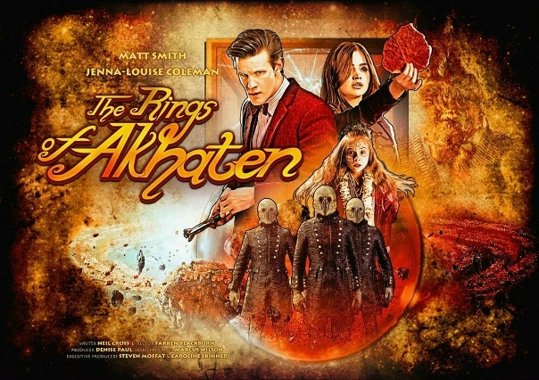
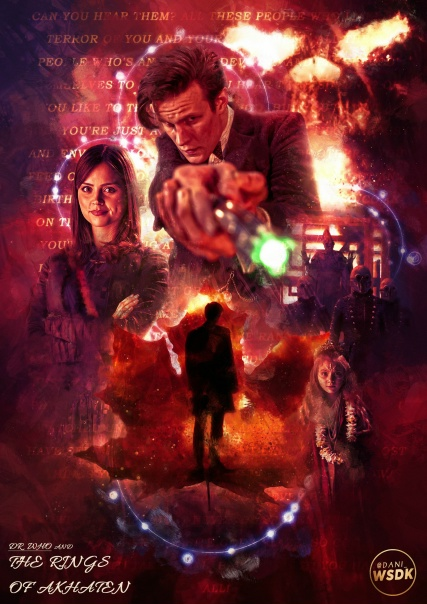

Эра Одиннадцатого Доктора (7 сезон)
<<< НАЗАД ||| 7. Кольца Акатена ||| ДАЛЬШЕ >>>
MVO [TVShows], [Кириллица], [Baibako], [ВГТРК] или Original [ENG]
Субтитры: Русские {TrueTransLate} или Английские
 | Вторая половина 7-го сезона (8 серий) |
The Rings of Akhaten
Дата выхода: 6 апреля 2013
Формат: 45-минутный эпизод
| Варианты озвучек: | * Разные: смотрите по инструкции |
|---|---|
| Скачивание и просмотр: |
Клара хочет увидеть что-то потрясающее, поэтому Доктор отвозит её на обитаемые кольца планеты Акатен, где в самом разгаре Фестиваль Приношений. Клара встречается с молодой Королевой Лет, в то время как паломники и местные жители готовятся к церемонии. Но в пирамиде что-то шевелится, и скоро потребуется жертвоприношение.




Трейлер:
https://youtu.be/McylxgOQBbA